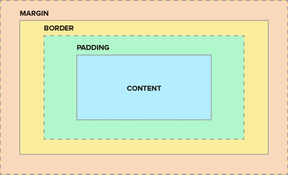

Paletas de colores
Se puede integrar CSS en 3 formas:
- inline: dentro del tag <... style="color: red;"> por ejemplo
- Dentro del HTML: dentro del tag head ponemos el tag style definiendo body{ color: #EAF6F6;} por ejemplo
- Fuera del HTML: dentro del tag head ponemos el tag link y su atributo href debe linkear al archivo .css El type="text/css" no importa realmente.
Orden de prioridad: inline, luego el tag styles dentro del HTML y luego el .css
Existen 3 selectors, por:
- tag: en el .css simplemente declaramos body{color:red;} por ejemplo
- class: en el .css especificamos un poco mas .rojo{color:red;}, pero tambien tenemos que ponerlo en el HTML dentro del tag que queremos <... class="rojo">
- id: es mas especifico #id1 {color:black;} y en el HTML <... id="id1">
- pseudo clase: esta relacionado a los estados del elemento, por ejemplo: img:hover{background-color: blue;}
Un tag puede tener varias clases, pero solo un id. <... class="uno dos">
Una clase puede usarse cuantas veces quiera. El id solo puede usarse una vez en todo un HTML, en un solo tag.
The box model

Propiedad display
Existen cuatro propiedades display:
- block: no deja que haya elementos al costado, se puede cambiar su width y height. Elementos block comunes: p, h1-h6, div, ol, ul, li, form.
- inline: al costado siempre, no se puede cambiar su width. Elementos inline comunes: span, img, a. Si queremos por ejemplo subrayar una parte de la palabra no podemos usar 3 p, se verian en diferentes lineas; usamos un span y en su .css le ponemos .subrayado{text-decoration: underline;}
- inline-block:
- none:
Se puede cambiar su propiedad display a cualquiera de los 4. Por ejemplo podemos cambiar un p, que por defecto es block, a inline; o a span, que por defecto es inline, a block. Sin embargo con eso se pierde y se gana la capacidad de cambiar width respectivamente. Entonces usamos inline-block, en donde se puede cambiar el width y es en la misma linea, mas o menos como funciona img. El display: none; simplemente no muestra en la pagina web; tambien se puede lograr eso con la propiedad visibility: hidden;
Propiedad position
El contenido es lo que determina el tamaño original de cualquier caja.
El orden viene del codigo
Los hijos se ponen delante de los padres. Por ejemplo un span dentro de un p: Este es el span
Posiciones:
- Todos los tags son static por defecto.
- relative nos permite posicionar un elemento relativo a lo que hubiese sido posicionado si fuese estatico. Existen coordenadas para empujarlos desde top right bottom left; lo que realmente hace esto es darle un margen. Cuando se mueven los elementos, no empujan nada, solo se sobreponen. Se cambia su posicion relativa a su misma posicion
- Posicion absolute cambia relativa a su elemento padre. Cuando se usa posicion absoluta, no se toma en cuenta para los otros elementos, no hay relacion. Esta ahi, pero es como si no lo estara.
- Posicion fixed es para que se quede ahi al momento de scrollear, etc.
Centrar elementos con CSS
- Con la propiedad text-align: center; se centrara todo dentro del elemento que no tenga un width establecido
- En caso tenga un width establecido, debemos usar la propiedad: margin: 0 auto 0 auto; (top, right, bottom, left) o margin: 0 auto; (top-bottom, right-left)
Estilizar fuentes con CSS
Fuente:
- Con la propiedad: font-family. Ej: font-family: 'Courier New', Courier, monospace; Se ponen varias fuentes por si alguna no esta disponible.
- Podemos embeber fuentes, desde google por ejemplo con fonts.google.com. Seleccionamos las fuentes que queremos, copiamos el elemento link que nos genera google y lo pegamos dentro de la seccion head
Tamaño:
- Con la propiedad: font-size Ej: font-size: 16px;
- El tamaño se puede especificar en px, esto no cambia al modificar el tamaño de la fuente en el navegador ya que es estatico. Si queremos dinamico se puede usar %, que es equivalente a 16px. Si queremos un valor x en porcentaje dividimos entre x/16. Tambien se puede usar em (diferente al tag em), equivalente a 16 px. 16px = 100% = 1em. em es heredado por el elemento padre (asi este en px, %, etc), si se quiere anular eso, se usa rem.
Propiedades float y clear
Si tenemos una imagen (u otro elemento) y queremos cuadrarla (wrap around) segun un texto podemos usar float: left;.
Si queremos que aun el texto se vaya a la siguiente linea y no envuelva la imagen podemos usar clear: right;